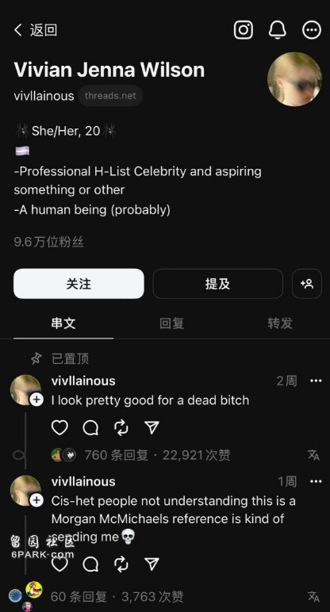

8月7日，马斯克变性“女儿”薇薇安·威尔逊（原名泽维尔·马斯克，2022年完成了性别转换并更名为薇薇安·威尔逊Vivian Jenna Wilson）近日在社交媒体Threads上炮轰马斯克。她直言不讳地指出马斯克并非外界所看到的那样。她写道：“你不是顾家的人，是一个连续出轨者，还总是对自己的孩子们撒谎。你从未踏进过教堂，不是一个基督徒。”
上个月，马斯克在“乔丹·B·彼得森播客”中自称是“基督教原则的坚定信仰者”，并警告说，如果没有社会的“勇气”，基督教将会“消亡”。在那次访谈中，他还声称自己“被骗”签署了允许薇薇安使用青春期阻断剂的文件。马斯克在访谈中表示薇薇安对他来说“已经死了”，是“被觉醒病毒杀死的”。
对此，薇薇安在“Threads”上以幽默的方式回应了马斯克，她说：“我看起来对一个被说死的人还不错。”而这条信息也是其目前Threads置顶的消息。

自从马斯克收购了“X”平台后，该平台上的种族主义言论有所增加。马斯克本人也公开放大并接受了包括反犹太和种族主义阴谋论在内的一些观点。
她还指出，马斯克并不真正关心气候变化，他更像是《头号玩家》中的CEO，只是想塑造一种形象。
薇薇安最后总结道：“你让我们这个物种变得多么容易受骗，因为不知何故，人们还是继续相信你，这对我来说一直是个谜。”
不过目前上面火爆的炮轰内容已无法在薇薇安的Threads主页及回复中已不存在。有媒体向马斯克寻求对此事的回应，马斯克尚未置评。
薇薇安和她的双胞胎兄弟是马斯克第一任妻子、作家贾斯汀·马斯克所生。马斯克与贾斯汀在2008年离婚，薇薇安表示，她的父母在洛杉矶地区的家中共享监护权。
薇薇安现在是一名学习语言的大学生，此前她从未接受过采访，基本上保持在公众视线之外。在2022年试图在加利福尼亚州法院批准更改她的名字时引起了注意，并在此过程中谴责了她的父亲。
“我不再与我的生物学父亲以任何方式、形态或形式生活在一起，”她在法庭文件中提到。
而针对马斯克在播客采访中对自己变性的极端言论，薇薇安在接受NBC的采访时表示，马斯克的表述越界了。他并没有被欺骗，相关治疗需要家长同意，在犹豫后，他同意了她的治疗。
“他很冷漠，”她说。“他很容易发怒。不关心别人，而且自恋。”
薇薇安对媒体透露，马斯克很少出现在她的生活中，自己和兄弟姐妹由他们的母亲或保姆照顾，尽管马斯克有共同监护权，与孩子共处时会斥责他们。